The GUI of PhaseLAB
The ImageQLSI and ImageEM classes own a common method, named figure that opens a graphical user interface (GUI) aimed to help the user display and process images. Here is how it is called:
% obj is an object, or an object vector, from the class ImageEM or ImageQLSI
obj.figure()
It also works with a series of images (an object vector).
Here is a screenshot of the PhaseLAB GUI:
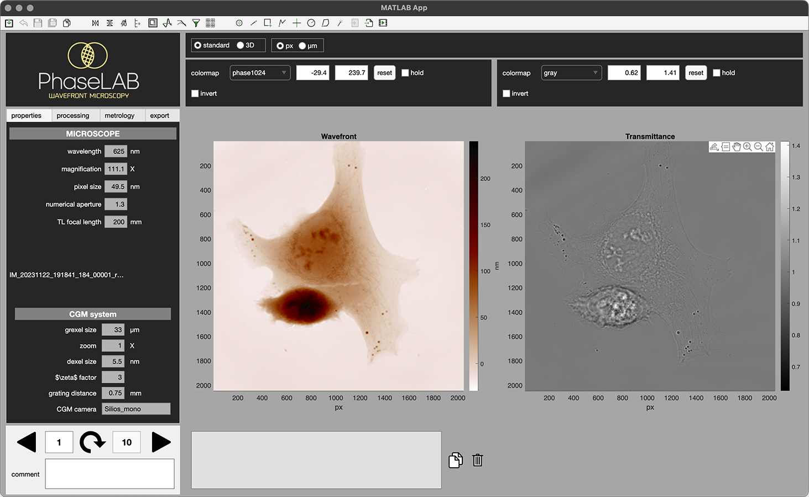It displays the wavefront and intensity images of the object, being an ImageQLSI or ImageEM object, along with panels and tabs to interact with these images.
There is the navigation panel (at the bottom left), the top panel, and the left panel containing 4 tabs, namely the properties, processing, metrology and export tabs.
{kind=link}
The top panel
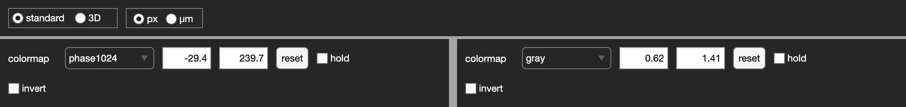The top panel contains tools that act on the images display. One can change the color scales, invert the color scales, change the range of values, freeze the range of values, switch from standard to 3D surface rendering and change the units of the axes (px or µm).
The properties tab
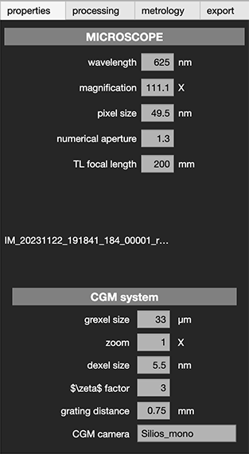The properties tab gathers all the properties of the setup used to acquire the image. These textboxes can’t be modified.
The processing tab
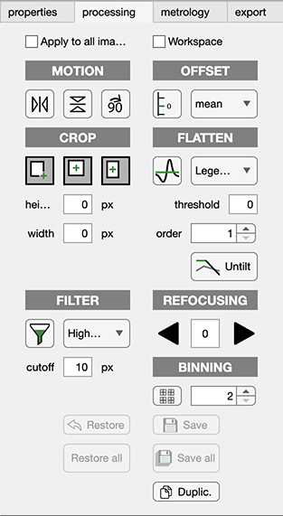The processing tab provides a rich interface to modify the images, e.g., to crop the images, flatten the background, reorient the images, etc. Here are all the functionalities:
If ticked, the apply to all images checkbox makes any image modification apply to all the images of the series.
The MOTION section provides tools to rotate or flip the images.
The OFFSET section provides a tool to set the zero of the wavefront image. By pressing the button, the user has to select the area on the image that is supposed to feature a zero wavefront value. The wavefront image will be automatically offseted to fulfill this condition.
The CROP section offers different tools to crop the images by drawing a rectangle. Depending on which button is pressed, either the user is invited to simply draw the rectangle from one corner to the other, or click on the center of the rectangle, and click again to define its dimension. Precise dimensions (width and heigth) can be specified in the text areas width and height. By defaults, the units are in pixels, by if the user selects µm in the top panel of the GUI, then the crop width and height can be set in µm.
The FLATTEN section provides a tool to flatten the background. Setting the threshold enables to consider only the background and not the objects, to calculate the background distorsion, as explained in Ref. [1]. A threshold value of 1.2 usually works fine. Then, the order of the highest moment has to be specified. With an order value of 1, only the tilt will be corrected, and with a value of 2, the coma will be corrected. Higher orders can be specified if the background features higher orders of distortion. This tool uses the
flattenmethod of the classes ImageEM and ImageQLSI. See The flatten method for more information.
The FILTER section applies high- or low-pass spatial filters on the images.
The REFOCUSING section enables the numerical refocusing of the images. It uses the
propagationmethod of the ImageEM and ImageQLSI classes (see The propagation method section).The BINNING section enables the downsizing of the image by factors of 2, 3, 4 or 6, by pixel binning.
The bottom buttons enable to cancel the unsaved modifications of the current image (Restore), or of all the images (Restore all), to save all the modifications applied to the current image (save), or to all the images of the series (save all). One can also duplicate the current image to keep an unmodified version of the image (Duplic.).
The metrology tab
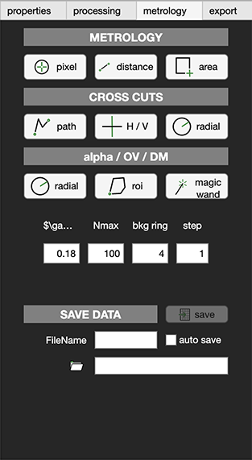The Metrology sectio does not modify the images. It only does measurements on them.
The METROLOGY section provides tools to display the pixel values, distances in px and µm, and areas in px and µm^2.
The CROSS CUTS section gathers tools to display image cross-cuts along a line or a polygonal chain, along the vertical and horizontal axes passing by the center of the image, or along a radius with an azimutal average.
The alpha/OV/DM section provides tools to measure dry masses and complex polarizabilities. When performing several measurements on the image, and even on several images, the measurements can be automatically saved in an Excel file by pressing the auto-save checkbox, and by indicating the save folder. There are three modes:
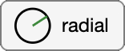: sum the pixels on a circular area. First, click on the OPD image to zoom in on the particle of interest, and press ‘z’ when the zoom is correct. Second, click on the center of the particle. A new figure will show up, plotting the pixel summation as a function of the radius of the circular area, from 0 to 100 px. Finally, click two times on the graph to define the range of value corresponding to a proper convergence of the integration. In practice, the line shape should feature a plateau, and the user should click at the beginning and at the end of the plateau. For instance, in this example, the user could click on \(x=18\) and \(x=40\):
Finally, the values of polarisability, OV and DM appear in the frame below the OPD image in the main GUI.
If the range 0-100 px is not appropriate to compute the pixel summation, the user can specify another maximum radius value in the Nmax textbox. The \(\gamma\) value is the specific refractive index increment used to compute the DM. Its value typically ranges from 0.18 to 0.20 µm2/pg.
This process calls the common
alpha_ImageProfile()method of the classes ImageQLSI and ImageEM (see The alpha_ImageProfile method).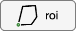: With this tool, the ROI is no longer a disc, but a segmented line that is drawn by the user. First, set the zoom and click ‘z’. Second, draw a closed polygonal chain:
Once the polygonal chain is closed, the figure dispappears and after some time of processing, integration curves appear giving the dry mass and optical volume as a function of the dilation factor. Finally, the user should click twice to define the plateau (see Refs. [2] and [3] for more details).
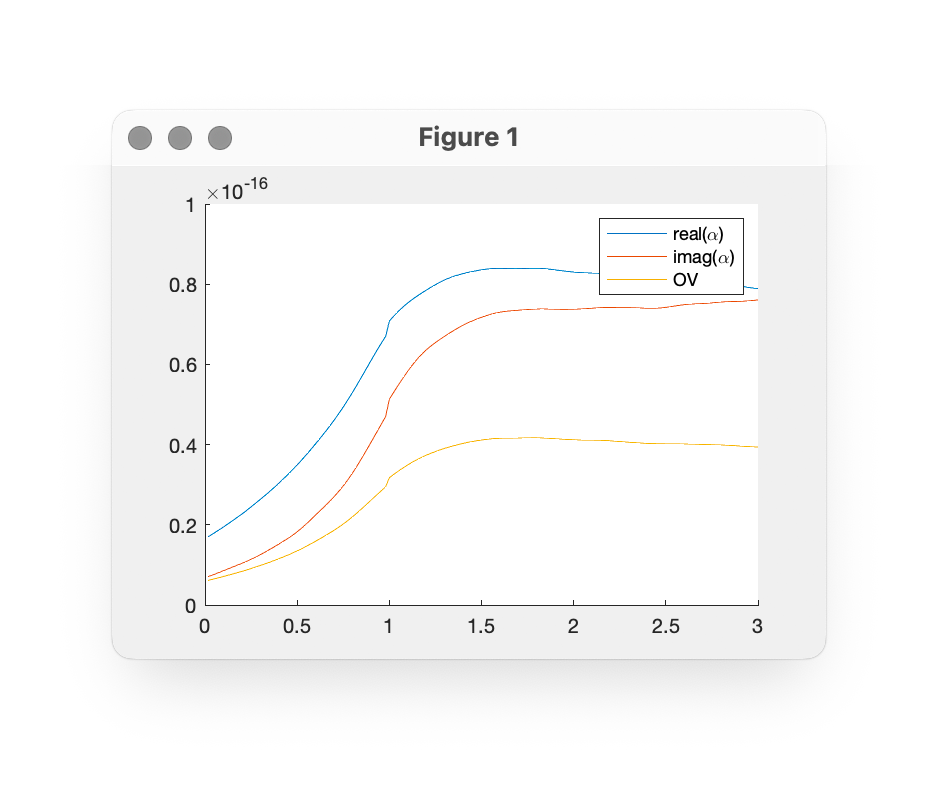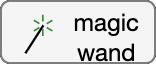: With this tool, one just need to click on the object of interest, ideally a biological cell. An automatic magic-wand-like tool will select the object of interest. Here is the interface:
Click on the Magic wand points button to click on the object of interest. Several clicks can be done to better capture the object. To exlude an area, one can click Remove area and draw the area to be removed. One can also confined the segmentation to a given area by clicking on Confine areaa. Once all this has been done, click on the space bar. After some time of computation, a new window appears to define the sensitivity of the magic wand, using a scrollbar:
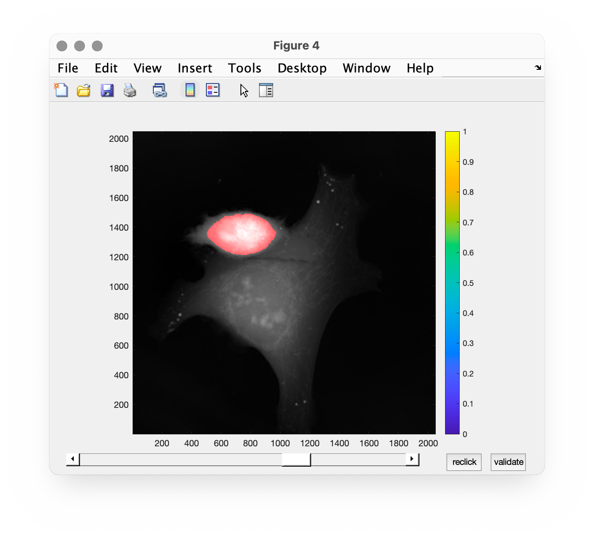Adjust the scrollbar so that the extension of the red area matches the object of interest. Then, click on validate. After some time of computation, a final window appears to select the plateau, like with the previous tools:
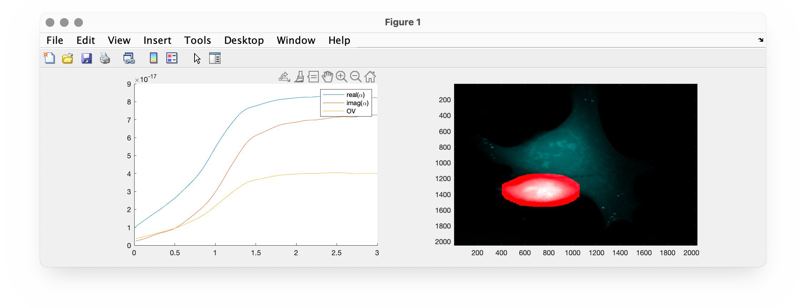Click twice and the results will be displayed in the textbox below the OPD image:
alpha: (82.72+i*71.65) x10^-18 [m^3]OV: 40.15e-18 m^3DM: 223.1 pg
{kind=link}
{kind=link}
{kind=link}
{kind=link}
{kind=link}
{kind=link}
The export tab
Export individual images
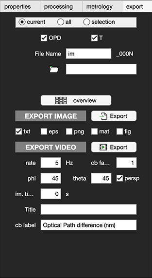This tab provides an interface to choose how to export images, in various formats (jpg, png, eps, txt, avi, etc). First of all, click on the proper radio button to choose whether you want to export only the current image, all the images of the series, or only a subset. If selection is chosen, then this window appears when exporting the image:
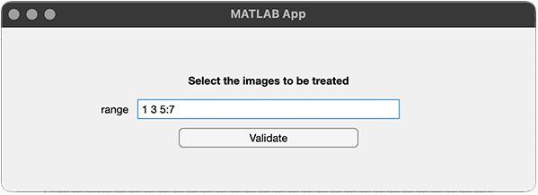The image numbers to be saved should be indicated, separated by comas or spaces. Colon symbols can be used. For instance: 1, 3, 10, 15:20, 32.
Then, click on the check boxes to chose whether the OPD, the intensity, or both images should be exported. Choose a prefix for the names of the files to be saved, and a save folder.
The button overview does not export anything on the hard drive disk. It just displays all the images of the series in one figure.
Click on the checkboxes txt, eps, … to indicate in which format(s) the images should be saved.
Click on the button to export the images, in the specifed format(s).
{kind=link}
Export a movie
The bottom part of the tab offers the possibility to build a movie from the current series of images. It is based on the use of the MakeMoviedx method of the classes ImageEM and ImageQLSI (see The MakeMoviedx method).
In the textboxes, many parameters can be entered, namely the frame rate of the movie (rate), the \(\phi\) and \(\theta\) angles of the camera to visualize the wavefront topography in 3D (phi and theta). \(\phi = 0\) and \(\theta = 0\) mean a view from the top. The checkbox persp adds a nice 3D effect on the image. One can indicate the experimental time between two successive images in the im. time textbox, so that the time is displayed on the movie. The cb factor textbox indicates a multiplication factor to be applied to the data. It is useful to convert the OPD image into a DM density image. In that case, the correction factor should be 5.5e-3, and the cb label can be dry mass density. Here is an example of generated movie using this panel: